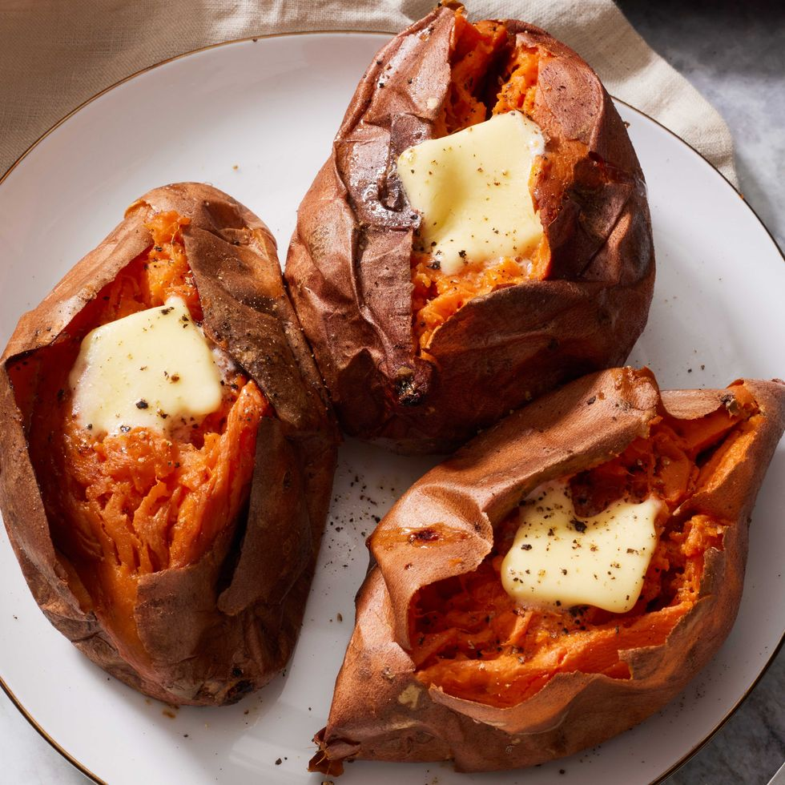

Baked Sweet Potato

Ingredients
- 4 sweet potatoes, scrubbed clean
- Olive oil, optional
- 2 cups milk
- 4 tbsp. butter
- Kosher salt
- Freshly ground black pepper
Directions
- Preheat oven to 425º. On a baking sheet lined with aluminum foil, prick sweet potatoes all over with a fork. Rub the outsides with a small amount of olive oil if you intend to eat the skins.
- Bake until tender, 45 to 50 minutes.
- Let cool, then split the tops open with a knife and top with a pat of butter.
Back to other recipes